AWS Managed Microsoft AD 構築・管理
2つのAvailability Zoneへ配置するAWS Managed Microsoft ADの構成と作成手順をまとめる
ディレクトリ作成後のユーザー、グループ、パスワードおよび可用性確認まで整理する
AWS Managed Microsoft ADの2台ドメインコントローラー構成・役割
目次
概要
本資料で説明すること
本資料では、AWS Managed Microsoft ADad.example.comに配置された2台のドメインコントローラーについて、通常時の役割、PDC Emulatorとの違い、クライアントによる接続先の選択および障害時の動作を説明する
今回の構成では、2台をap-northeast-1aとap-northeast-1cへ1台ずつ配置し、DNS IPアドレスとして192.168.225.68と192.168.225.126を使用する
結論
結論：2台とも稼働し、一方は待機専用ではない
2台とも通常時から稼働する書き込み可能なドメインコントローラーです。ユーザー認証、コンピューター認証、DNS、Kerberos、LDAP、グループポリシーなどのActive Directory機能を提供し、ディレクトリ情報を相互にレプリケーションする
AWSが2台を作成する理由
AWS Managed Microsoft ADでは、ディレクトリ作成時に2台のドメインコントローラーが異なるアベイラビリティーゾーンのサブネットへ1台ずつ配置されます。目的は、1台または1つのアベイラビリティーゾーンへ障害やメンテナンスの影響が生じても、もう1台を利用できる構成にすること
AWS Directory Serviceコンソールでは、この初期2台を Required と表示します。Requiredは「主系」という意味ではなく、可用性を確保するために削除できない必須の2台という意味です。可用性や処理性能をさらに高めるために追加したDCは Additional と表示される
出典：AWS公式：AWS Managed Microsoft ADで作成される内容
RequiredとAdditionalの違い
| AWSコンソール上の区分 | 意味 | 削除・縮退 |
|---|---|---|
| Required DC | ディレクトリ作成時にAWSが作成する初期2台。異なるAZへ分散される | 2台未満にはできない |
| Additional DC | 可用性、耐障害性または認証処理性能を高めるために追加するDC | 合計2台を下限として削減可能 |
AWS公式ページの一部には、削除できない初期2台を「primary and secondary domain controllers」と表現した箇所があります。ただし、これはADの処理方式が主系／待機系であることを示すものではありません。同じAWS公式資料ではすべてのDCが書き込み可能であると説明されているため、本資料では誤解の少ない Required DC-1／Required DC-2 という表現へ統一する
どちらが「メイン」なのか
通常の認証・検索処理には固定のメインDCはない
Microsoft Active Directory Domain Servicesはマルチマスター方式です。書き込み可能な各DCは、ユーザーやコンピューターなどのディレクトリ変更を受け付け、変更内容を他のDCへレプリケーションします。このため、AWS Managed Microsoft ADの2台を一般的なアクティブ／スタンバイ構成として説明しない
AWSの公式ホワイトペーパーでも、AWS Managed Microsoft ADのすべてのDCは書き込み可能であり、DCとFSMOロールの割り当てはAWSが管理すると説明されている
出典：AWS公式ホワイトペーパー：FSMOロールと書き込み可能なドメインコントローラー
PDC Emulatorは「全体のメインDC」ではない
Active Directoryでは、競合を避ける必要がある一部の処理だけを1台が担当します。この役割をFSMO（Flexible Single Master Operations、操作マスター）と呼び、PDC EmulatorもFSMOの1つ
| PDC Emulatorの主な役割 | 説明 |
|---|---|
| パスワード変更の優先処理 | 最近変更されたパスワード情報を優先的に受け取り、別DCでパスワード不一致となった場合の照会先になる |
| アカウントロックアウト | ロックアウト関連処理の中心的な役割を持つ |
| 時刻同期 | フォレストルートドメインのPDC Emulatorがドメイン階層の時刻基準になる |
| GPO編集 | 既定ではGPOの変更先としてPDC Emulatorが使用される |
PDC Emulatorを保持するDCが1台存在しても、そのDCだけが認証、DNS、LDAP、Kerberosなどの通常処理を担当するわけではありません。もう1台も停止待機ではなく、通常時からサービスを提供するDC
AWS Managed Microsoft ADでは、DCのOS管理、FSMOロールの割り当て、障害時の復旧をAWSが管理します。お客様がPDC Emulatorを「主系」に指定したり、通常運用でFSMOロールを手動移行したりする構成ではない
出典：Microsoft公式：Windows Serverにおける操作マスター役割
クライアントはどちらのDCを利用するのか
WindowsのクライアントやActive Directory対応アプリケーションは、通常、次の流れでDCを選択する
- DCがDNSへ登録したLDAP、Kerberos、グローバルカタログ、サイトなどのSRVレコードを照会
- 候補DCへLDAP UDP pingを送信し、利用可能性を確認
- サイトとサブネットの情報がある場合は、同じサイトまたは最適なサイトのDCを優先
- 応答した適切なDCを利用し、選択結果を一定時間キャッシュ
- 選択中のDCが応答しなくなった場合は、別の利用可能なDCを再探索
したがって、毎回2台へ単純にラウンドロビンする動作でも、常に「DNSアドレスの1番目」だけを使用する動作でもありません。アプリケーションからDCのホスト名またはIPアドレスを固定せず、Windows DC Locatorを利用することが重要
出典：Microsoft公式：Active Directoryドメインコントローラーの検索
2台間でレプリケーションされるもの
代表的には、次の情報が2台のDC間でレプリケーションされる
- ユーザー、グループ、コンピューターなどのActive Directoryオブジェクト
- パスワードおよびグループメンバーシップなどの属性
- Active Directory統合DNSゾーンの情報
- グループポリシーのディレクトリ情報とSYSVOL上のファイル
片方のDCへ障害またはメンテナンスが発生した場合
| 項目 | 動作 |
|---|---|
| クライアントの接続 | 選択中のDCが応答しなければ、DC Locatorにより別の利用可能なDCを再探索する |
| 認証・名前解決 | ネットワークからもう1台へ到達できれば、通常処理を継続できる構成となる |
| AWSのパッチ適用 | AWSはDCを順番にパッチし、同時に必要な稼働DC数を失わないよう管理する |
| DC障害 | AWSが同じAZ内で同じIPアドレスを使用して障害DCを自動的に置き換える |
| FSMO依存処理 | PDC Emulatorなど特定ロールへ依存する一部処理では、一時的な遅延または制限が生じる可能性がある |
「1台故障しても必ず無瞬断・無影響」とは説明しません。アプリケーション側のDNSキャッシュ、DC選択のキャッシュ、接続タイムアウト、ネットワーク到達性、FSMO依存処理によっては、一時的な遅延や再試行が発生する
出典：AWS公式：AWS Managed Microsoft ADの主要概念
今回の確認値
| 確認項目 | 今回の設定値 | 意味 |
|---|---|---|
| アベイラビリティーゾーン | ap-northeast-1a、ap-northeast-1c |
2台のDCを異なるAZへ配置する |
| DNS IPv4アドレス | 192.168.225.68、192.168.225.126 |
2台のDCが提供するディレクトリDNSのアドレス |
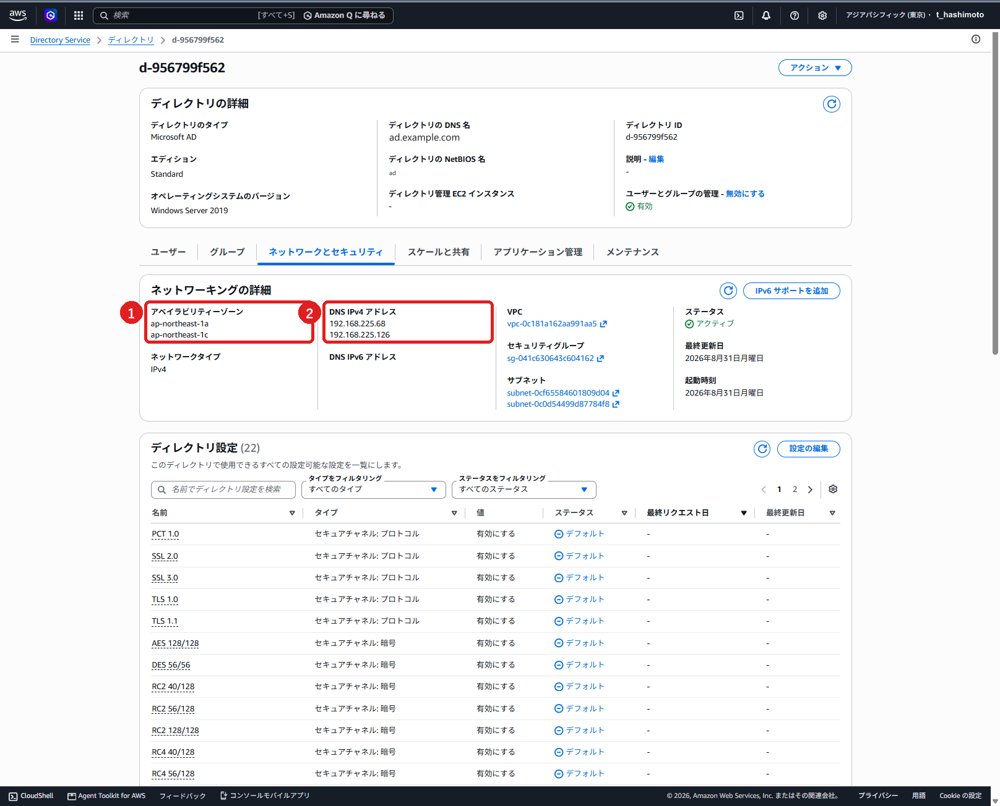
画像内の番号
- ① 2台のDCが配置される2つのアベイラビリティーゾーン
- ② 2台のDCが提供する2つのDNS IPv4アドレス
この画面だけでは、各DNS IPと各AZの1対1の対応は表示されません。対応関係を個別に確認する場合は、Directory Serviceの「スケールと共有」タブにあるドメインコントローラー一覧、またはAWS CLIの取得結果で確認する
AWSとお客様の管理責任
| AWSが管理するもの | お客様が確認・管理するもの |
|---|---|
| DCのプロビジョニング、OS、パッチ適用 | VPC、サブネット、ルート、NACL、セキュリティグループの到達性 |
| DC、DNS、ADレプリケーションの監視 | DHCPオプションセットまたはクライアントDNS設定で2つのDNS IPを利用できること |
| 日次バックアップ、DC障害時の自動置換 | アプリケーションが特定のDC/IPへ固定接続していないこと |
| FSMOロールの割り当てと管理 | ユーザー、グループ、OU、委任、GPOなど許可された範囲のディレクトリ管理 |
| AWS管理領域のセキュリティと復旧 | 2台のDCを経由した認証・DNS・GPO適用の業務試験 |
出典：AWS公式：AWS Managed Microsoft ADのベストプラクティス
お客様説明時の回答例
Q1. どちらがメインのドメインコントローラーですか
どちらか一方を通常処理のメインとして固定する構成ではありません。2台とも書き込み可能な稼働DCです。特定のDCがPDC EmulatorなどのFSMOロールを保持しますが、これは一部処理の役割分担であり、認証全体の主系という意味ではない
Q2. もう1台は待機系ですか
待機専用ではありません。通常時から認証、DNS、LDAP、Kerberos、グローバルカタログなどを提供し、もう1台とディレクトリ情報をレプリケーションしている
Q3. コンソールの2つのDNS IPはプライマリとセカンダリですか
2つのIPは、別々のAZに配置された2台のDC兼DNSサーバーのアドレスです。DNSクライアント側で表示順はありますが、Active DirectoryのDC選択はDNS SRVレコードとDC Locatorによって行われるため、1番目のIPが認証処理全体の主系という意味ではない
Q4. 片方が停止したら自動的に切り替わりますか
Windowsクライアントは、利用中のDCが応答しない場合に別の利用可能なDCを再探索します。AWSは障害DCを同じAZ・同じIPで自動置換します。ただし、キャッシュや接続タイムアウトにより一時的な遅延が生じる可能性があるため、無瞬断とは説明しない
Q5. 2台より増やせますか
増やせます。認証要求が多い場合や、可用性をさらに高めたい場合はAdditional DCを追加できます。追加したDCも、ディレクトリが使用する既存のAZとサブネットへ分散される
運用確認に使用できるコマンド
管理用EC2またはドメイン参加済み端末で、必要に応じて次を実行します。いずれも確認用の読み取り操作
## 現在のログオンで使用したDC
$env:LOGONSERVER
## ドメイン内で検出できるDC
nltest /dclist:ad.example.com
## DC LocatorによるDCの再検出
nltest /dsgetdc:ad.example.com /force
## DC、IP、サイト、Global Catalogの確認
Get-ADDomainController -Filter * |
Select-Object HostName, IPv4Address, Site, IsGlobalCatalog
## 現在のFSMOロール保持先
Get-ADDomain |
Select-Object PDCEmulator, RIDMaster, InfrastructureMasterコマンド結果は確認時点の状態です。特定DCを通常接続先として固定する目的には使用しない
AWS Managed Microsoft AD構築手順と前提条件の確認
目次
AWS Managed Microsoft ADで作成される内容
AWS Managed Microsoft ADを作成すると、AWSが高可用性に必要な基盤と、ディレクトリ管理に使用するActive Directoryオブジェクトを自動で構成する
AWSが構成する基盤
| 作成内容 | 役割・運用上の扱い |
|---|---|
| 2台のドメインコントローラー | 異なる2つのアベイラビリティーゾーンへ配置されます。主系／待機系ではなく、どちらも通常時から稼働する書き込み可能なドメインコントローラー |
| ENI | 各ドメインコントローラーをVPCへ接続する |
| セキュリティグループ | Active Directoryの通信に必要なルールが設定されます。初期状態では、作成先VPCのプライマリIPv4 CIDRからの通信が許可される |
| 2つのDNS IPアドレス | ドメイン参加、名前解決、認証およびグループポリシーの参照に使用します。クライアント側のDNS設定は、ディレクトリ作成後に別途行う |
| バックアップと暗号化 | バックアップは1日1回自動実行され、ドメインコントローラーのAmazon EBSボリュームは暗号化される |
Active Directory内に作成される管理領域
| 作成内容 | 役割・運用上の扱い |
|---|---|
Adminユーザー |
ディレクトリ管理者として、NetBIOS名と同名のOU配下にあるUsersへ作成されます。本環境ではad\Users |
AWS Delegated Groups OU |
ユーザーへ管理権限を委任するためのグループが格納されます。GPO管理や詳細なパスワードポリシー管理など、作業内容に対応する委任グループを使用する |
AWS Reserved OU |
AWSが使用するサービス管理アカウントが格納されます。お客様が管理対象として使用する領域ではない |
ad OU |
ディレクトリ作成時に指定したNetBIOS名に基づく管理用OUです。配下にComputersとUsersが作成され、お客様が管理するコンピューターとユーザーを配置する |
AWSが作成して適用するGPO
| GPO | 主な適用対象・役割 |
|---|---|
Default Domain Policy |
ドメインへ適用され、パスワードとKerberosのポリシーを設定する |
ServerAdmins |
ドメインコントローラー以外のコンピューターへ、委任されたサーバー管理者グループをローカル管理者として設定する |
AWS Reserved Policy:User |
AWS Reserved OU内のユーザーへAWS推奨のセキュリティ設定を適用する |
AWS Managed Active Directory Policy |
すべてのドメインコントローラーへAWS推奨のセキュリティ設定を適用する |
TimePolicyNT5DS / TimePolicyPDC |
PDC Emulatorとそれ以外のドメインコントローラーに、それぞれ必要な時刻同期設定を適用する |
Default Domain Controllers Policy |
作成されますが、AWS Managed Microsoft ADでは代わりにAWS Managed Active Directory Policyが使用される |
AWSが作成したGPOは、削除、編集または既存リンクの解除を行えません。お客様固有の設定は専用GPOとして作成し、お客様が管理するOUへリンクする
出典：AWS公式：AWS Managed Microsoft ADで作成される内容
概要
本手順書で実施すること
既存VPCad-vpc-002の異なるアベイラビリティーゾーンに配置されたプライベートサブネット（192.168.225.64/27・192.168.225.96/27）を使用し、ディレクトリDNS名ad.example.com、NetBIOS名ad、Standard EditionのAWS Managed Microsoft ADを1ディレクトリ作成する
作成後は、ディレクトリが「アクティブ」になったことと、AWSから割り当てられた2つのDNS IPアドレス、VPCおよびサブネットを確認する
完了条件
次の項目をすべて確認できた時点で、本作業を完了とする
- ✔ ディレクトリのステータスが「アクティブ」である
- ✔ DNS IPアドレスが2つ表示されている
- ✔ 作成先VPCと2つのサブネットが構築条件と一致している
2台の役割、PDC Emulatorとの違い、クライアントによる接続先ドメインコントローラーの選択および障害時の動作は、AWS Managed Microsoft ADの2台ドメインコントローラー構成・役割を参照してください
前提条件
AWS Managed Microsoft ADのサービス要件
- 同一のネットワークタイプで、異なるアベイラビリティーゾーンに配置された2つ以上のサブネットがある
- VPCのハードウェアテナンシーが「デフォルト」である
- VPCで
198.18.0.0/15のアドレス空間を使用していない - 作業者のIAM IDに
ds:CreateMicrosoftADと、VPC・サブネットの参照、セキュリティグループおよびENIの作成に必要なEC2権限が付与されている
本環境の構築条件
- ✔ 操作リージョンがアジアパシフィック（東京）
ap-northeast-1である - ✔ VPC
ad-vpc-002のステータスが「利用可能」である - ✔ VPCのDNS解決とDNSホスト名が有効である
- ✔ 次の2つのプライベートサブネットが利用可能である
| 用途 | サブネット名 | CIDR | アベイラビリティーゾーン |
|---|---|---|---|
| Directory Service用（1台目） | ad-pri-sub-002-002a |
192.168.225.64/27 |
ap-northeast-1a |
| Directory Service用（2台目） | ad-pri-sub-002-002c |
192.168.225.96/27 |
ap-northeast-1c |
- ✔
Adminユーザーに設定するパスワードを準備している
警告：Adminパスワードを作業記録や画面キャプチャへ残さない
Adminパスワードは、手順書、チケット、作業ログおよび画面キャプチャへ記録しません。AWSコンソールで入力したパスワードは再表示できない
ディレクトリの作成
Directory Serviceのセットアップを開始する
- AWSマネジメントコンソールへサインイン
- 画面右上で、リージョンが「アジアパシフィック（東京）」になっていることを確認
- サービス検索から「Directory Service」を開く
- 「ディレクトリのセットアップ」で「AWS Managed Microsoft AD」を選択
- 「ディレクトリのセットアップ」を選択

画像内の番号
- ① リージョンが「アジアパシフィック（東京）」であることを確認する
- ② 「AWS Managed Microsoft AD」を選択する
- ③ 「ディレクトリのセットアップ」を選択する
ディレクトリタイプを選択する
- 「ディレクトリタイプ」で「AWS Managed Microsoft AD」を選択
- 「AWS Managed Microsoft ADの使用を開始する」で「AWS managed ADドメインを新規作成」を選択
- 「次へ」を選択
本環境ではAWS Managed Microsoft ADを新規作成するため、「既存のADドメインをハイブリッドディレクトリで拡張・新規」は選択しない

画像内の番号
- ① 「AWS Managed Microsoft AD」を選択する
- ② 「AWS managed ADドメインを新規作成」を選択する
- ③ 「次へ」を選択する
ディレクトリ情報を入力する
「ディレクトリ情報を入力」画面で、次の値を設定する
| 項目 | 今回の設定値 |
|---|---|
| ディレクトリのタイプ | Microsoft AD |
| エディション | Standard Edition |
| ディレクトリのDNS名 | ad.example.com |
| ディレクトリのNetBIOS名 | ad |
| ディレクトリの説明 | 未入力 |
| ユーザーとグループの管理 | 無効（作成後に有効化） |
DNS名はActive Directoryで使用する完全修飾ドメイン名です。NetBIOS名はドメインの短縮名として使用する
注意：ディレクトリのDNS名を既存のDNS名前空間と重複させない
同じ名前のAmazon Route 53プライベートホストゾーンなどが存在すると、クライアントの名前解決に影響する可能性があります。入力前に既存のDNS名前空間と重複していないことを確認する
ディレクトリを作成しただけでは、VPC内のクライアントが自動的にDirectory ServiceのDNS IPアドレスを使用する状態にはなりません。管理用EC2などの名前解決に必要なDHCPオプションセットまたはクライアントDNS設定は、後続手順で実施する
「ユーザーとグループの管理」は「無効」のまま作成します。この項目は、AWSマネジメントコンソール、AWS CLIまたはAWS Tools for PowerShellからユーザーとグループを管理するための任意設定です。作成後、ユーザーおよびグループメンバーシップ管理手順で有効化する

画像内の番号
- ① 「Standard Edition」を選択する
- ② ディレクトリのDNS名に
ad.example.comを入力する - ③ ディレクトリのNetBIOS名に
adを入力する
Adminパスワードを入力する
- 「Adminパスワード」に、準備したパスワードを入力
- 「パスワードを確認」に、同じパスワードを再入力
- 次のパスワード要件を満たしていることを確認する
- 8文字以上64文字以下である
- 小文字、大文字、数字、英数字以外の文字の4分類のうち、3分類以上を含む
adminという単語を含まない
- 「次へ」を選択
注意：Adminパスワードの最長有効期間は既定で42日である
AWS Managed Microsoft ADのDefault Domain Policyでは、Adminを含むユーザーのパスワード最長有効期間が42日に設定されます。運用開始前に、パスワードの保管担当者、変更担当者および次回変更日を決定する

画像内の番号
- ① Adminパスワードを入力する
- ② ①と同じパスワードを再入力する
- ③ 「次へ」を選択する
VPCとサブネットを選択する
「VPCとサブネットを選択」画面で、次の値を設定する
| 項目 | 今回の設定値 |
|---|---|
| VPC | ad-vpc-002（192.168.225.0/24） |
| ネットワークタイプ | IPv4のみ |
| サブネット1 | ad-pri-sub-002-002a（192.168.225.64/27、ap-northeast-1a） |
| サブネット2 | ad-pri-sub-002-002c（192.168.225.96/27、ap-northeast-1c） |
| 初期ADサイト名 | Default-First-Site-Name |
注意：サブネット1とサブネット2のアベイラビリティーゾーンを照合する
サブネット1がap-northeast-1a、サブネット2がap-northeast-1cに属していることを確認してから「次へ」を選択する

画像内の番号
- ① VPCで
ad-vpc-002を選択する - ② ネットワークタイプで「IPv4のみ」を選択する
- ③ サブネット1で
ad-pri-sub-002-002aを選択する - ④ サブネット2で
ad-pri-sub-002-002cを選択する - ⑤ 「次へ」を選択する
設定内容を確認して作成する
「確認と作成」画面で、次の内容を確認する
- ✔ ディレクトリタイプが「Microsoft AD」である
- ✔ エディションが「Standard」である
- ✔ DNS名が
ad.example.comである - ✔ NetBIOS名が
adである - ✔ VPCが
ad-vpc-002で、サブネットCIDRが192.168.225.64/27と192.168.225.96/27である - ✔ 画面に表示される料金を確認している
警告：ディレクトリの作成後は構成変更に制約がある
DNS名、VPCおよびサブネットの誤りがないことを確認してから作成します。入力値に誤りがある場合は「ディレクトリの作成」を選択せず、該当画面へ戻って修正する
内容に問題がなければ、「ディレクトリの作成」を選択する

画像内の番号
- ① 構成と料金を確認し、「ディレクトリの作成」を選択する
作成結果の確認
ディレクトリの状態を確認する
- ディレクトリ一覧で、作成したディレクトリのステータスを確認
- ステータスが「リクエスト済み」から「作成中」へ遷移することを確認
- ステータスが「アクティブ」になるまで待機
作成には通常20～45分程度かかりますが、システム負荷により変動する
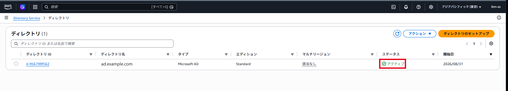
画像内の番号
- ① ステータスが「アクティブ」であることを確認する
AWS Directory Serviceによるユーザーおよびグループメンバーシップ管理手順
目次
概要
本手順書で実施すること
AWS Managed Microsoft ADad.example.comに対して、AWS Directory Service Dataの「ユーザーとグループの管理」を有効化し、AWSマネジメントコンソールからユーザーの作成・削除と既存グループのメンバー追加・削除を行う
今回の手順では、sampleadminの作成、AdminとsampleadminのAWS Delegated FSx Administratorsへの追加、sampleadminのAWS Delegated Administratorsからの削除、およびsampleworkの削除を確認する。各操作は承認された作業だけを実施する
今回の設定値
| 項目 | 今回の設定値 |
|---|---|
| ディレクトリDNS名 | ad.example.com |
| 管理方法 | AWS Directory Service Dataコンソール |
| 新規作成ユーザー | sampleadmin |
| グループ追加先 | AWS Delegated FSx Administrators |
| グループへ追加するユーザー | Admin、sampleadmin |
| グループ削除元 | AWS Delegated Administrators |
| グループから削除するユーザー | sampleadmin |
| 削除するユーザー | samplework |
| メールアドレス | t_hashimoto@example.com |
管理方法の選択
本手順書では、AWS Directory Service Dataに対応する操作をAWSマネジメントコンソールから実施します。Directory Service Dataが対象の操作や属性をサポートしない場合は、ドメイン参加済みのWindows Server EC2へActive Directory管理ツールを導入し、ADUCまたはPowerShellから管理する
- 出典：AWS公式：Amazon EC2インスタンスを使用してユーザーとグループを管理する
- 出典：AWS公式：AWS Managed Microsoft AD用のActive Directory管理ツールのインストール
- 出典：AWS公式：ADUCまたはPowerShellによるAWS Managed Microsoft ADユーザーの作成
AD管理ツールをPowerShellで導入する場合のAWS掲載例は次のとおりです。DNS管理も行う場合は、サーバーマネージャーでDNS Server Toolsを追加する
Install-WindowsFeature RSAT-ADDS前提条件
- ✔ 対象がAWS Managed Microsoft ADであり、ディレクトリのステータスが「アクティブ」である
- ✔ 対象ディレクトリのプライマリリージョンから操作している
- ✔ Directory ID、DNS名、リージョンおよび作業対象が承認内容と一致している
- ✔ 操作担当者に必要なIAM権限が付与されている
- ✔ ユーザー削除または高権限グループへの追加が承認されている
- ✔ パスワードを手順書、作業記録、チャット、コマンド履歴および画面キャプチャへ残さない
IAM権限
IAM権限とActive Directory内のグループ権限は別物である。AWSマネジメントコンソールを操作できても、Active Directoryの管理権限が自動的に付与されることはない。逆も同様である
日常運用へAWSDirectoryServiceDataFullAccessを一律に付与せず、対象Directory ARNへ必要なアクションだけを許可する
| 役割 | 主なアクション例 |
|---|---|
| 機能の状態確認 | ds:DescribeDirectories、ds:DescribeDirectoryDataAccess |
| 機能の有効化 | 上記に加えてds:EnableDirectoryDataAccess |
| 機能の無効化 | 必要時のみds:DisableDirectoryDataAccess |
| ユーザー参照・作成 | ds:AccessDSData、ds-data:ListUsers、ds-data:DescribeUser、ds-data:CreateUser |
| グループ参照・メンバー操作 | ds:AccessDSData、ds-data:ListGroups、ds-data:DescribeGroup、ds-data:ListGroupMembers、ds-data:AddGroupMember、ds-data:RemoveGroupMember |
| ユーザー削除 | ds:AccessDSData、参照系アクション、ds-data:DeleteUser |
削除権限は、参照・作成・メンバー操作の担当権限から分離することを推奨する
出典：AWS公式：AWS Managed Microsoft ADのユーザーとグループの管理
AWS Managed Microsoft ADの管理上の注意
AdminとAdministrator
| 項目 | Admin |
Administrator |
|---|---|---|
| 管理主体 | お客様 | AWS |
| 用途 | お客様用OUとAWSから委任された範囲の管理 | AWSによるディレクトリ運用 |
| Domain Admins / Enterprise Admins | メンバーではない | AWSが排他的に管理する組み込み高特権アカウント |
| お客様による利用 | 初期設定・緊急時。日常運用は個人識別できる管理ユーザーを推奨 | 利用・変更しない |
Adminのパスワードは後から取得できない。リセットを行う場合は、対象アカウントが無効化されていたときに再び有効となる仕様があるため、リセット後にアカウント状態を確認する
AWSが管理するオブジェクト
AWS ReservedOU内のAWS_で始まるサービス管理アカウントは変更しない- AWSが管理する組み込みアカウントの
AdministratorとKerberosで使用するkrbtgtは変更しない AWS Delegated GroupsはOU名であり、その配下に用途別のAWS Delegated ...グループがあるAWS Delegated Administratorsは非常に強い委任管理権限を持つ。一般ユーザーへ付与しないAWS Delegated FSx AdministratorsはFSx管理用の高権限グループである。FSx管理担当者以外へ付与しない- 既存のグループの入れ子関係は、ユーザー追加・削除作業と分けて管理する。図10に表示される既存の
AWS Delegated Administratorsグループは、本作業で変更しない - 既定オブジェクトとして確認できない環境固有グループは、所有者と用途が確定するまで変更しない
パスワードポリシー
AWS Managed Microsoft ADのDefault Domain Policyには次の値が設定され、PSOが割り当てられていないユーザーへ適用される。AWSが作成したDefault Domain Policyは編集、削除または既存リンクの解除を行わない
| 項目 | AWS既定値 |
|---|---|
| パスワード履歴 | 24個 |
| 最長有効期間 | 42日（Adminを含む） |
| 最短有効期間 | 1日 |
| 最小長 | 7文字 |
| 複雑さ | 有効 |
| 可逆暗号化による保存 | 無効 |
本番環境で異なるポリシーが必要な場合は、Active Directory管理センター（ADAC）のSystem\Password Settings Containerに用意されているCustomerPSO-01～CustomerPSO-05を編集し、ユーザーまたはセキュリティグループへ割り当てる
| PSO | 変更できない優先順位値 |
|---|---|
CustomerPSO-01 |
10 |
CustomerPSO-02 |
20 |
CustomerPSO-03 |
30 |
CustomerPSO-04 |
40 |
CustomerPSO-05 |
50 |
優先順位値が小さいPSOほど優先されます。個人へ直接割り当てたPSOはグループ経由のPSOより優先されるため、通常は承認済みのセキュリティグループ単位で割り当てる
PSOを設定して適用する
- 操作ユーザーが
AWS Delegated Fine Grained Password Policy Administratorsのメンバーであることを確認 - ドメイン参加済みの管理用EC2でADACを起動
- ツリービューへ切り替え、
System\Password Settings Containerを開く - 使用する
CustomerPSO-01～CustomerPSO-05を開き、承認されたパスワード履歴、長さ、有効期間、複雑さおよびロックアウト値を設定します。優先順位値は変更できない - 「直接の適用先」へ承認されたユーザーまたはセキュリティグループを追加
- レプリケーション後、対象ユーザーの実効ポリシーをPowerShellで確認
Get-ADUserResultantPasswordPolicy -Identity '<ユーザー名>'- ✔ 想定した
CustomerPSO-0xが返される - ✔ PSOを割り当てないユーザーでは
Default Domain Policyが適用される - ✔ 実効ポリシーの確認に
net userを使用していない
管理者によるパスワードのリセットでは、パスワード履歴と最短有効期間が適用されません。また、最小長や複雑さなどの新しい品質要件は、通常、次回のパスワード変更時に評価される
- 出典：AWS公式：AWS Managed Microsoft ADパスワードポリシー
- 出典：AWS公式：パスワードポリシーの割り当てと確認
- 出典：AWS公式：パスワードポリシー管理権限の委任
- 出典：AWS Security Blog：利用者区分に応じた強力なパスワードポリシーの設計例
ユーザーとグループの管理機能を有効化する
この操作は対象ディレクトリで一度だけ行う初期設定である。作業のたびに有効化し直す必要はない
操作手順
- AWSマネジメントコンソールへサインイン
- 対象ディレクトリのプライマリリージョンを選択
- Directory Serviceの「ディレクトリ」を開く
- Directory ID、DNS名、ディレクトリタイプおよびステータスを照合し、対象ディレクトリを選択
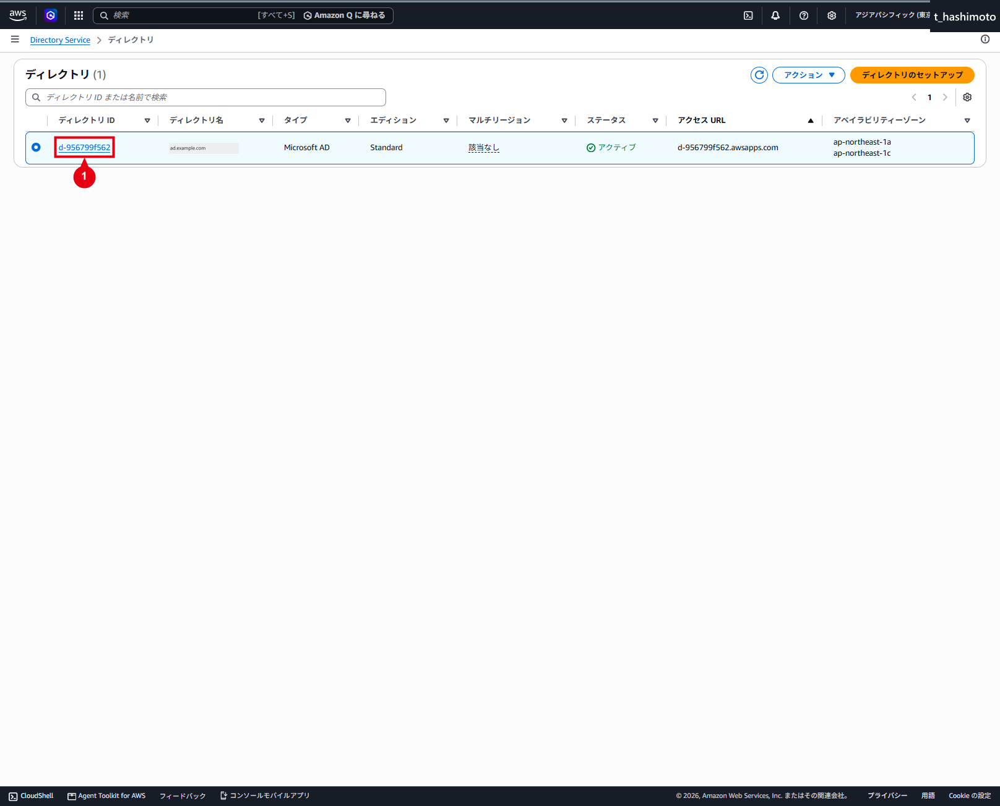
画像内の番号
- ① 対象行の情報を照合したうえで、ディレクトリIDのリンクを選択して詳細画面を開く
- 「ユーザー」タブを選択
- 「ユーザーとグループの管理」が「無効」であることを確認し、「有効にする」を選択

画像内の番号
- ① 「有効にする」を選択して、確認ダイアログを表示する
- 確認ダイアログの対象を確認し、「有効にする」を選択
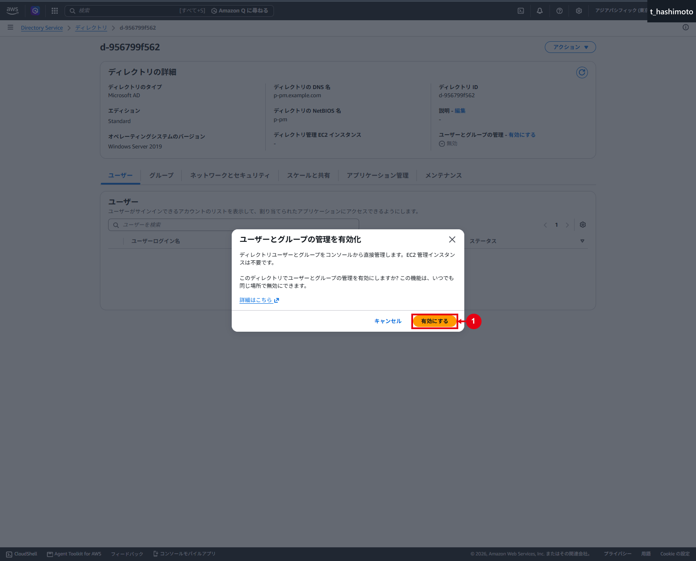
画像内の番号
- ① ダイアログの説明と対象ディレクトリを確認し、「有効にする」を選択する
- 「ユーザーとグループの管理」が「有効」と表示されることを確認
- 「ユーザー」タブに一覧と「ユーザーを作成」が表示されることを確認
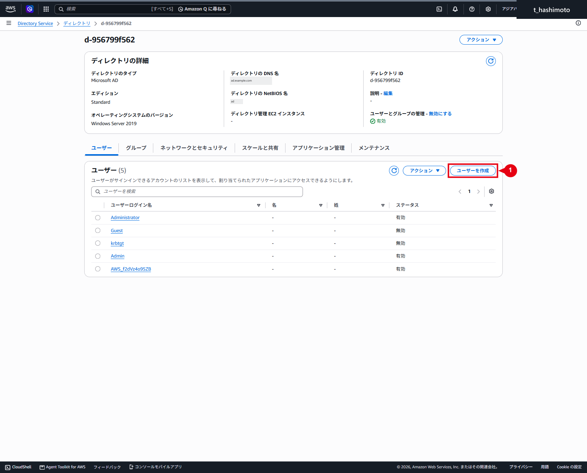
画像内の番号
- ① 「ユーザーを作成」ボタンが表示されていることを確認する。引き続きユーザーを作成する場合は、このボタンを選択する
実施後の確認
- ✔ 管理機能が「有効」と表示されている
- ✔ ユーザーとグループを参照できる
誤って有効化した場合は、Directory Service Dataを利用する運用や自動処理がないことを確認してから、同じ詳細画面で無効化する
ユーザーを新規作成する
出典：AWS公式：AWS Directory Service Dataコンソールによるユーザーの作成
作成前の確認
| 項目 | 確認内容 |
|---|---|
| ユーザーログイン名 | ディレクトリ内で一意、20文字以内、命名規則に合致していること |
| 氏名・表示名 | 作業申請と一致していること |
| メールアドレス | 必要な場合だけ入力し、承認された値であること |
| 初期パスワード | 実効パスワードポリシーを満たし、安全に受け渡せること |
| 所属グループ | 業務上必要な最小権限だけであること |
ユーザーログイン名は作成後に変更できないため、確定前に綴りと命名規則を再確認する
操作手順
- 対象ディレクトリの「ユーザー」タブで「ユーザーを作成」を選択
- ユーザーログイン名と初期パスワードを入力
- 必要に応じて氏名、表示名、説明および連絡先を入力
- パスワードが伏字であることを確認し、「次へ」を選択
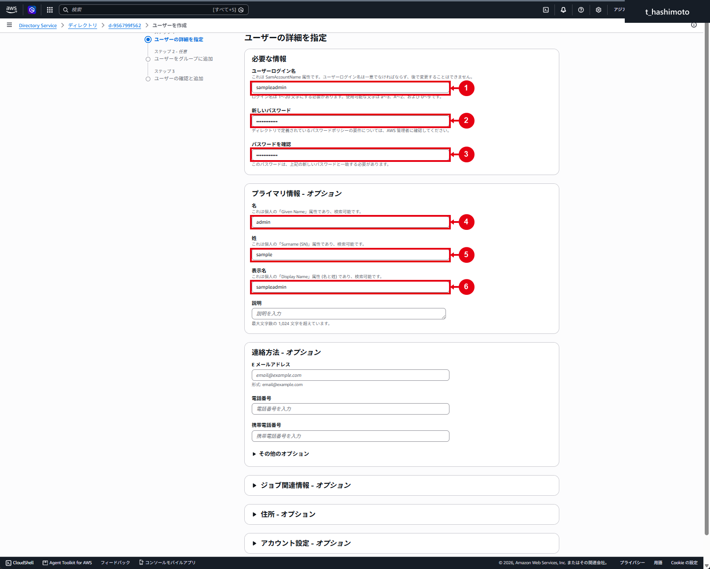
画像内の番号
- ① 申請されたユーザーログイン名を入力します。作成後は変更できないため、綴りと命名規則を確認する
- ② 初期パスワードを入力します。パスワードは画面上で伏字になる
- ③ 確認用として、②と同じパスワードを再入力する
- ④ 必要に応じて、申請された「名」を入力する
- ⑤ 必要に応じて、申請された「姓」を入力する
- ⑥ 必要に応じて、申請された表示名を入力する
- 「ユーザーをグループに追加」で、申請されたグループだけを選択します。作成時に権限付与しない場合は、グループを選択せずに進む
- 「次へ」を選択
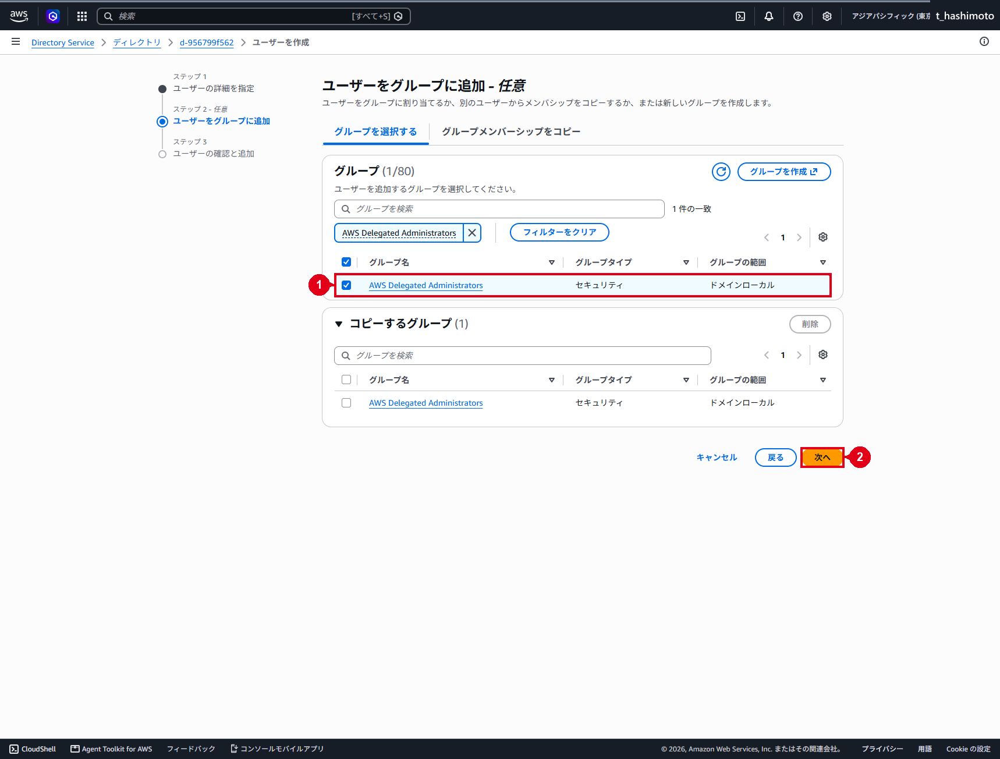
画像内の番号
- ① 申請された所属グループだけを選択します。今回の画面では
AWS Delegated Administratorsを選択している - ② 選択内容を確認して「次へ」を選択する
警告：一般ユーザーへAWS Delegated Administratorsを付与しない
今回の画面で選択しているAWS Delegated Administratorsは、強い委任管理権限を持つグループです。本番では、承認された場合を除き一般ユーザーへ付与しない
- 確認画面で、ログイン名、氏名、表示名、メールアドレスおよび所属予定グループを照合
- 内容に問題がなければ「ユーザーを作成」を選択
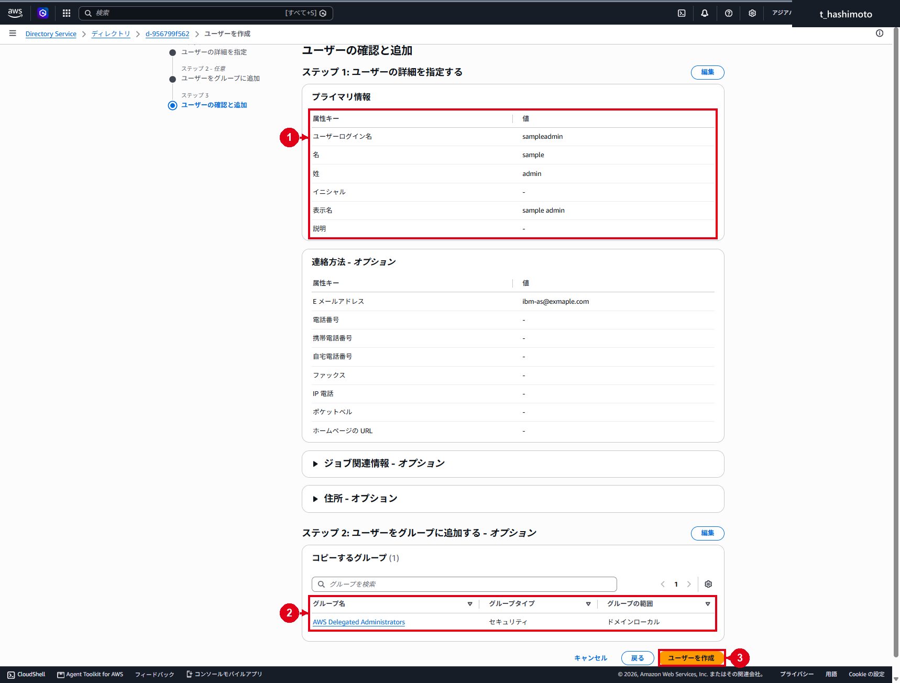
画像内の番号
- ① ユーザーログイン名、氏名および表示名を申請内容と照合する
- ② 所属予定グループを申請内容と照合する
- ③ 内容に問題がなければ「ユーザーを作成」を選択する
- 作成成功メッセージと、ユーザー一覧のステータス「有効」を確認
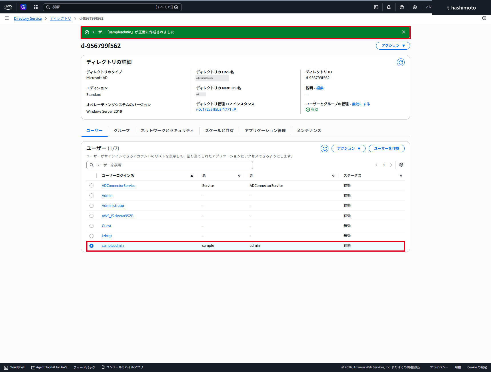
画像の見方
- 上部の作成成功メッセージと、ユーザー一覧に表示された対象ユーザーおよびステータス「有効」を確認する
実施後の確認
- ✔ 申請されたログイン名のアカウントが1件だけ作成され、ステータスが「有効」である
- ✔ 作成時にグループを指定した場合だけ、承認済みグループのメンバーになっている
- ✔ パスワードが手順書、作業記録および画面キャプチャへ記録されていない
一覧への反映が遅れている場合は更新後に待機し、表示結果を確認するまで同じ作成操作を繰り返しない
既存ユーザーをグループへ追加する
操作手順
- 対象ディレクトリの「グループ」タブを開く
- 申請されたグループ名を検索
画像内の番号
- ① 検索条件に、申請された対象グループ名が指定されていることを確認する
- ② 検索結果から対象グループ名のリンクを選択して、詳細画面を開く
- グループを選択し、識別名、SID、グループタイプ、グループの範囲および既存メンバーを確認
- 「メンバーを追加」から「ユーザーを追加」を選択
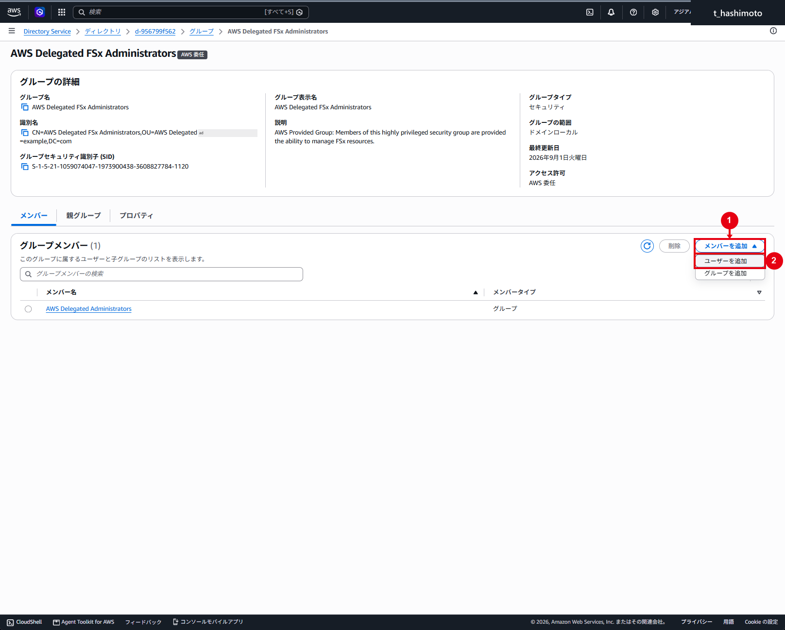
画像内の番号
- ① 「メンバーを追加」を選択して、追加方法のメニューを開く
- ② 「ユーザーを追加」を選択します。「グループを追加」は選択しないでください
- 申請されたユーザーを検索し、ログイン名、氏名およびステータスを照合
- 「選択したユーザー」に、承認済みの対象ユーザーだけが表示されていることを確認
- 「ユーザーをグループに追加」を選択
警告：AWS Delegated FSx Administratorsへ承認済みユーザーだけを追加する
AWS Delegated FSx AdministratorsはFSx管理用の高権限グループです。申請と承認を確認し、FSx管理担当者だけを追加する
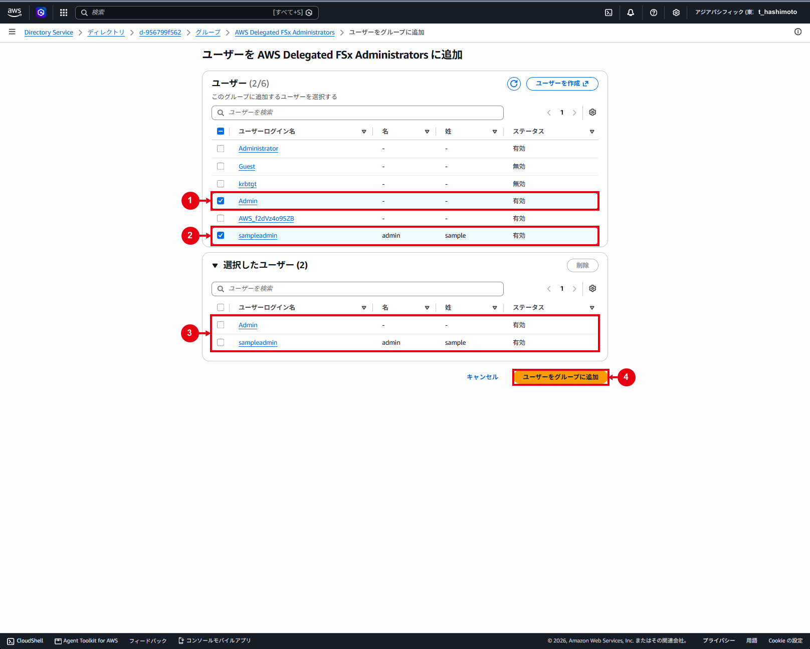
画像内の番号
- ① 今回は
Adminを選択しています。本番では、承認済みの場合だけ対象ユーザーを選択する - ② 今回は
sampleadminを選択しています。本番では、申請されたユーザーだけを選択する - ③ 「選択したユーザー」に、追加対象のユーザーだけが表示されていることを確認する
- ④ 対象に誤りがなければ「ユーザーをグループに追加」を選択する
- 成功メッセージと、追加後のメンバー一覧を確認
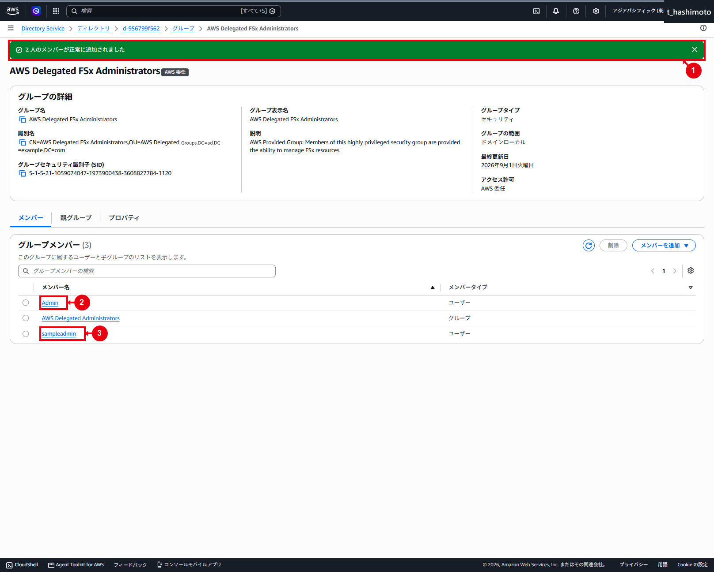
画像内の番号
- ① メンバーの追加成功メッセージを確認する
- ② 今回追加した
Adminがメンバー一覧に表示されていることを確認する - ③ 今回追加した
sampleadminがメンバー一覧に表示されていることを確認する。本番では、承認済みユーザーだけが追加されていることを確認する
- ユーザー詳細を開き、グループメンバーシップへ追加先グループが表示されることを確認
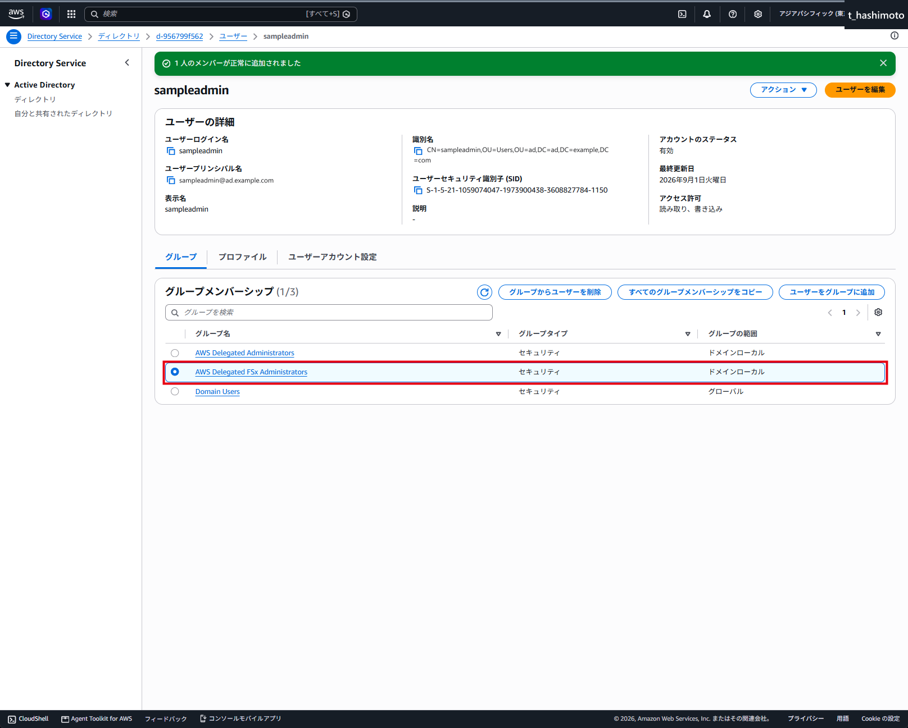
画像の見方
- 赤枠内で、選択中のグループメンバーシップを確認する。本番では、申請された最小権限のグループだけが選択されていることを確認する
- 上部の追加成功メッセージはグループメンバー追加の結果です。ユーザー作成の完了は図8で確認する
実施後の確認
- ✔ 承認された対象ユーザーだけが対象グループへ追加されている
- ✔ 対象外ユーザーと既存の子グループを含め、他のメンバー構成が変更されていない
未反映時は更新後に待機し、状態を確認するまで同じ追加操作を繰り返しません。誤追加した場合は、次章に従って誤ったユーザーだけを削除する
ユーザーをグループから削除する
この操作はグループメンバーシップだけを削除し、ユーザーアカウント自体は残す
操作手順
- 対象ディレクトリの「グループ」タブで、申請されたグループを開く
- 「メンバー」タブで、削除対象のログイン名とメンバータイプが「ユーザー」であることを確認
- 削除対象ユーザーだけを選択し、グループ名とユーザーログイン名を再確認
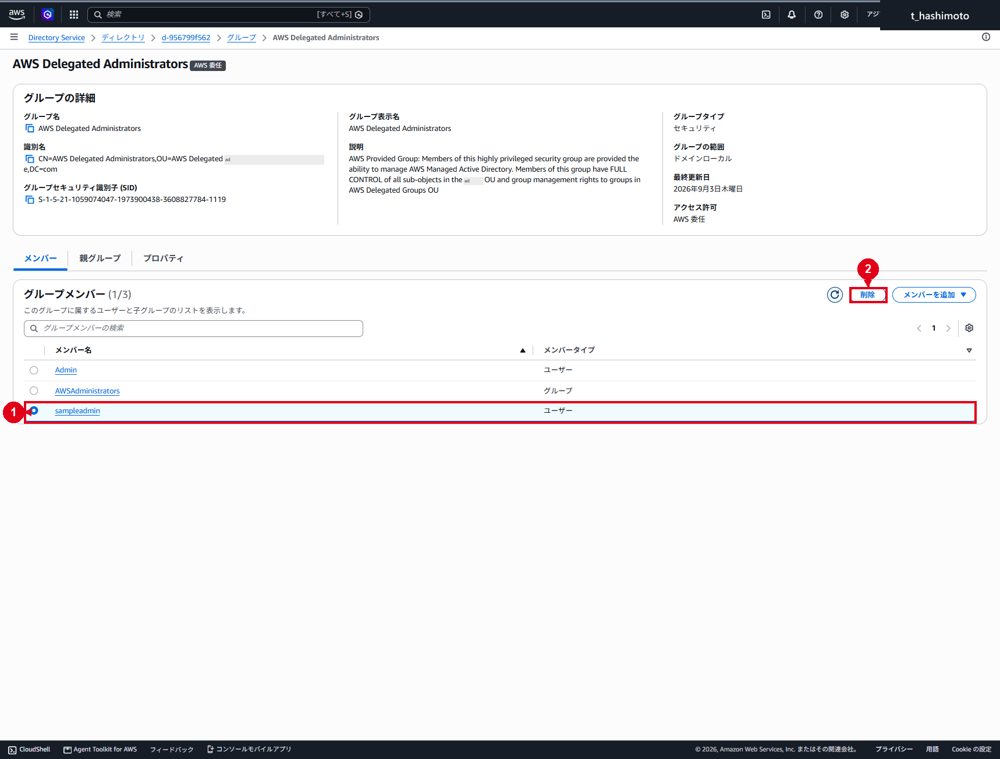
画像内の番号
- ① 削除申請されたユーザーだけを選択します。今回の画面では
sampleadminを選択している - ② 対象に誤りがなければ「削除」を選択します。この操作で削除されるのはグループメンバーシップであり、ユーザーアカウントではない
警告：削除ボタン押下前にグループとユーザーを再確認する
この画面では「削除」を選択した後に確認ダイアログは表示されず、グループメンバーシップの削除が直ちに実行されます。「削除」を選択する前に、対象グループと対象ユーザーを必ず再確認してください
- 対象に誤りがない場合だけ「削除」を選択
- 成功メッセージと削除後のメンバー一覧を確認
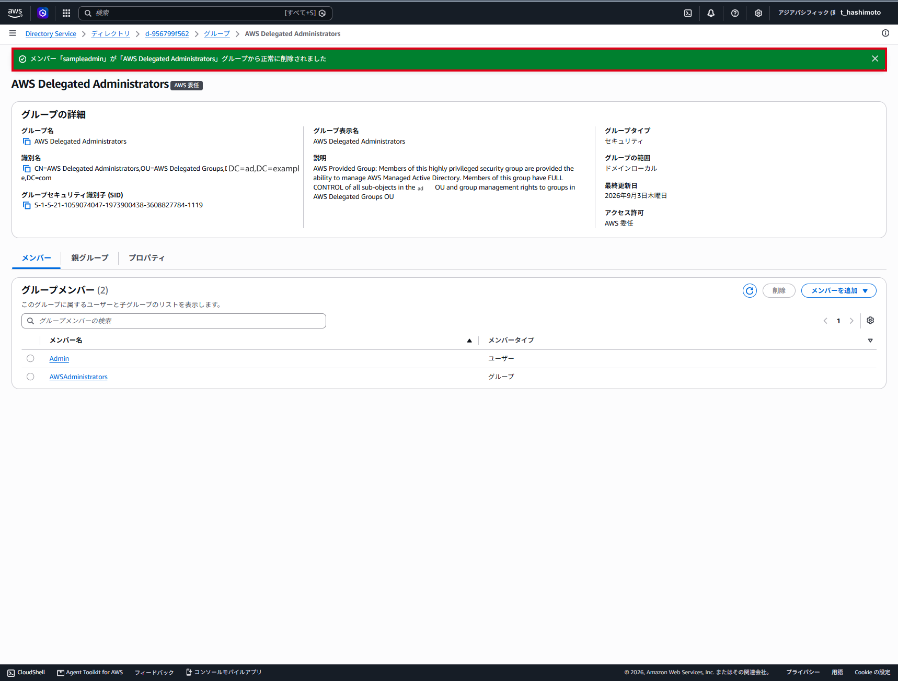
画像の見方
- 上部の削除成功メッセージを確認する
- 削除後の一覧を確認し、対象ユーザーだけが消え、その他のユーザーや子グループが残っていることを確認する
- 「ユーザー」タブで対象ユーザーを検索し、アカウント自体が残っていることを確認
実施後の確認
- ✔ 対象ユーザーが指定グループに表示されず、ユーザーアカウントは残っている
- ✔ 対象外ユーザーと既存の子グループが変更されていない
誤削除した場合は申請内容を確認し、前章に従って対象グループへ再追加します。グループから削除したユーザーは、そのグループから継承した権限を失うため、関連サービスでは再サインイン後の確認が必要になる場合がある
ユーザーアカウントを削除する
削除前の確認
| 確認項目 | 確認内容 |
|---|---|
| 対象 | ログイン名、表示名、氏名が申請と一致していること |
| 状態 | 有効・無効の状態と最終利用状況を確認したこと |
| 復旧情報 | SIDと全グループメンバーシップを保存したこと |
| 関連サービス | WorkSpaces、FSx、共有フォルダー、バッチ、サービスアカウントなどで未使用であること |
| 退職・異動運用 | 削除前の無効化期間やデータ引継ぎを完了したこと |
| 承認 | 削除対象と実施日時が承認済みであること |
操作手順
- 対象ディレクトリの「ユーザー」タブを開く
- 申請されたログイン名を検索し、削除対象ユーザーだけを選択
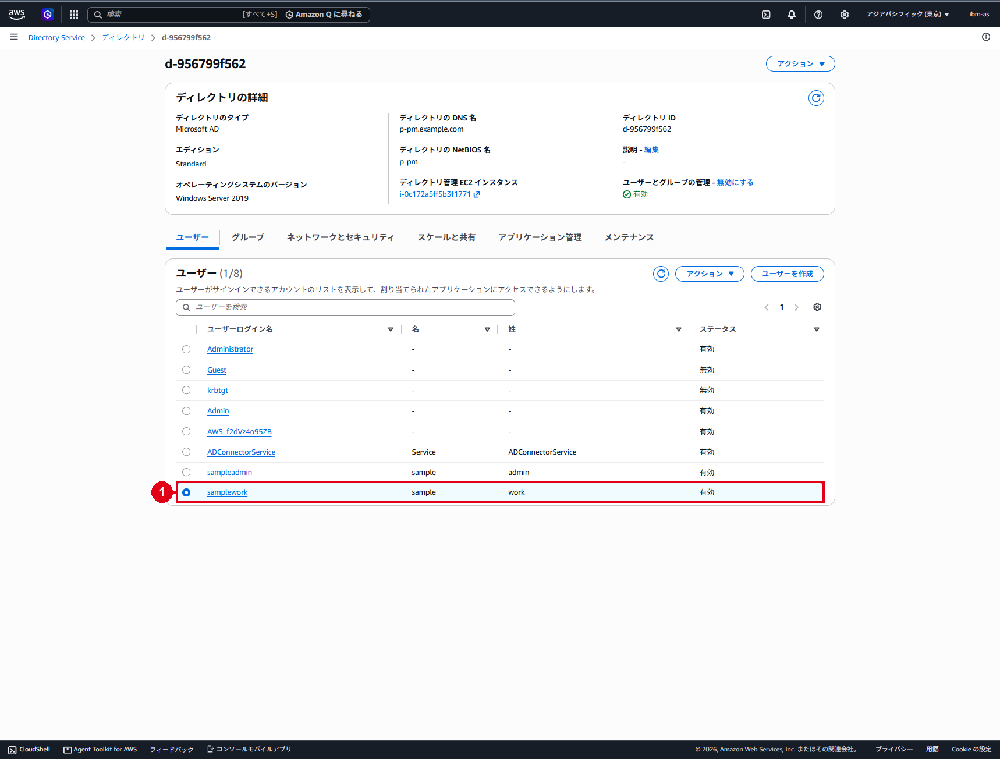
画像内の番号
- ① 削除申請されたユーザーだけを選択します。今回の画面では
sampleworkを選択している
- 「アクション」から「ユーザーアカウントを削除」を選択
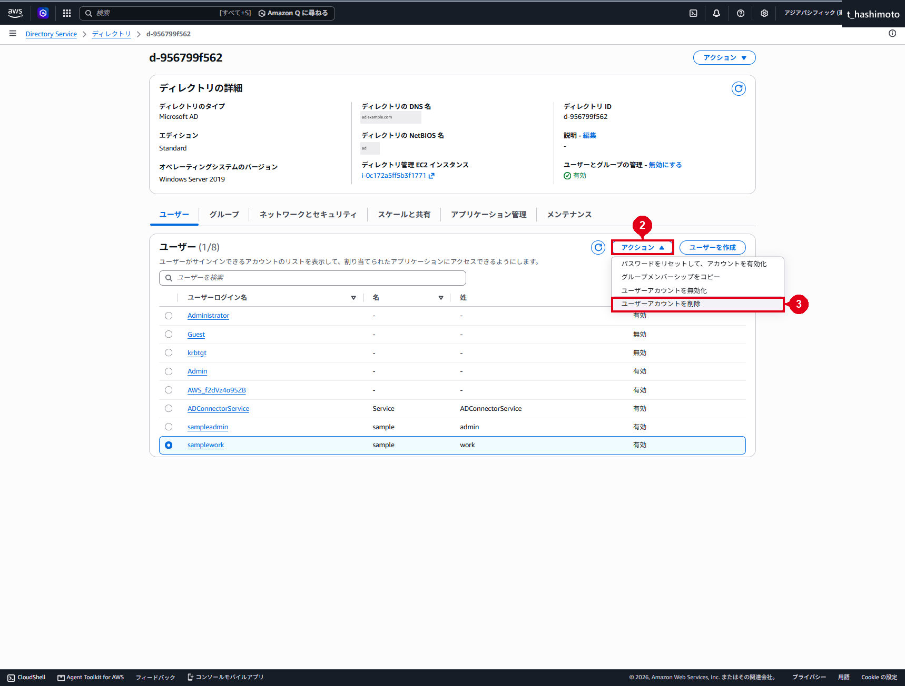
画像内の番号
- ② 「アクション」を選択して、操作メニューを開く
- ③ 「ユーザーアカウントを削除」を選択します。グループメンバーシップの削除とは異なり、ユーザーアカウント自体を削除する操作
- 確認ダイアログのログイン名と表示名を申請内容と照合
- ユーザー情報とアクセスに必要な情報が削除される旨を確認
- 対象に誤りがなければ「ユーザーアカウントを削除」を選択
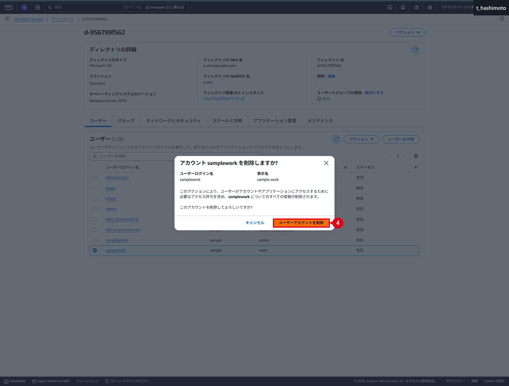
画像内の番号
- ④ 「ユーザーアカウントを削除」が最終確定ボタンです。ログイン名と表示名を申請内容と再照合し、対象に誤りがない場合だけ選択する
- 削除成功メッセージを確認
- 「ユーザー」タブで対象ログイン名を検索し、一覧に表示されないことを確認
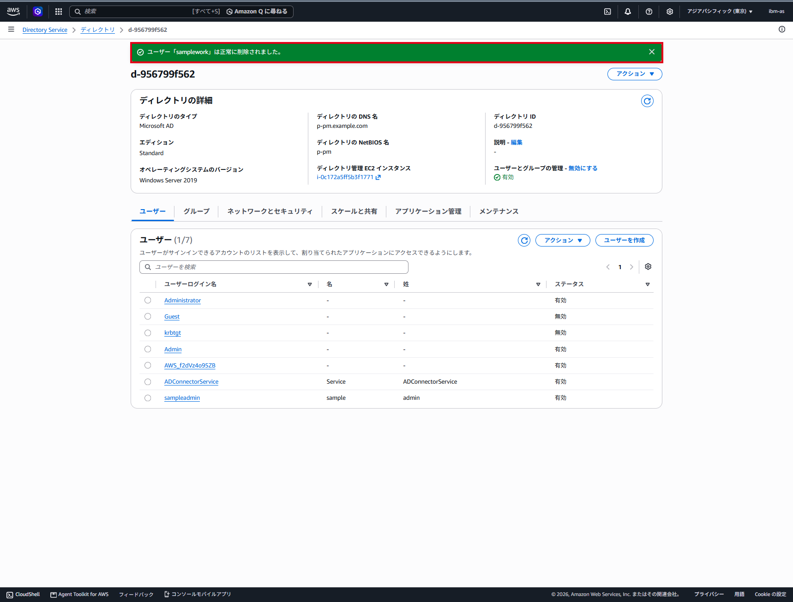
画像の見方
- 上部の削除成功メッセージを確認する
- ユーザー一覧を確認し、削除した
sampleworkが表示されず、対象外のユーザーが残っていることを確認する
実施後の確認
- ✔ 対象ユーザーだけが一覧から削除され、対象外ユーザーが残っている
- ✔ 削除したユーザー名で検索しても一覧へ表示されない
一覧への反映が遅れている場合は更新後に待機し、状態を確認するまで削除操作を繰り返しません。誤削除時は追加変更を停止します。同じログイン名で新規作成してもSIDが変わり、以前のアクセス権は自動復旧しません。運用手順が整備されている場合は、管理用のドメイン参加端末からActive Directory Recycle Binによる復元を優先します。ディレクトリのスナップショット復元はディレクトリ全体へ影響するため、単一ユーザーの通常復旧として実施しない